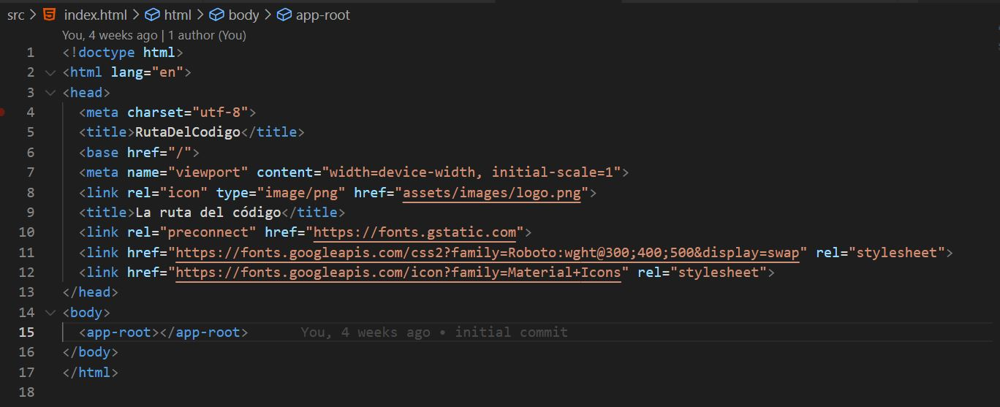
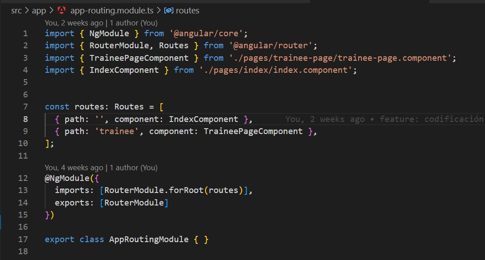
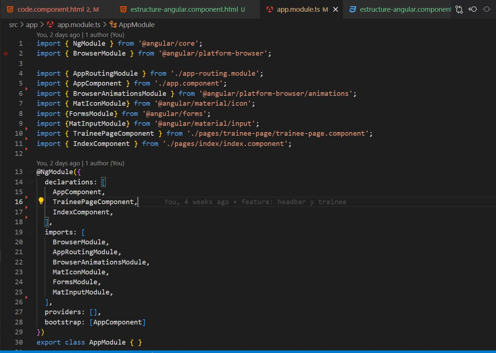

En la imagen podemos apreciar la estructura con la que se creará el proyecto de angular.
Es la carpeta que contiene todas las dependencias de nuestro proyecto, es decir todas las librerias que usaremos.
es la carpeta que contiene nuestro proyecto, donde encontramos el código, los componentes, servicios, etc... En esta carpeta se encuentra la carpeta app, allí crearemos los componentes de nuestra aplicación, podemos separarlos segun el tamaño del componente o la complejidad del mismo.
Lo ideal es mantener un orden y una estructura clara, para mejorar la gestión del proyecto.
Es la carpeta que contiene todos los recursos estaticos que usaremos en nuestro proyecto, como imagenes, estilos, fuentes, etc...
Es el archivo HTML base de la aplicación, donde Angular renderiza la aplicación.
En la linea 15 podemos ver la etiqueta app-root, esta etiqueta le indica a angular que allí se renderizara el componente principal de nuestra aplicación.
Es el archivo de configuración de las rutas de nuestra aplicación, por ejemplo en este caso para la ruta raiz le decimos que renderice el componente IndexComponent, y para la ruta 'dominio/trainee' le decimos que renderice el componente TraineePageComponent.
En este archivo también podemos configurar los guards, que son funciones que se ejecutan antes de renderizar el componente, para permitir o no el acceso a ciertas rutas. Por ejemplo si no se esta logueado o si no tiene cierto rol.
es el corazón de la configuración de nuestra aplicación en Angular. En este archivo se importan y declaran los módulos, componentes, servicios y otros elementos necesarios para que la aplicación funcione correctamente, como librerias externas.
Es importante destacar que AppModule actúa como el módulo raíz de la aplicación, y es donde organizamos los módulos principales que utilizaremos. Aunque podemos crear tantos módulos como necesitemos para dividir nuestra aplicación en partes más manejables, es fundamental ser cuidadosos con las importaciones para evitar redundancias o conflictos entre módulos.
En resumen estas son las carpetas y los archivos que más utilizaremos durante el desarrollo de nuestra aplicación.